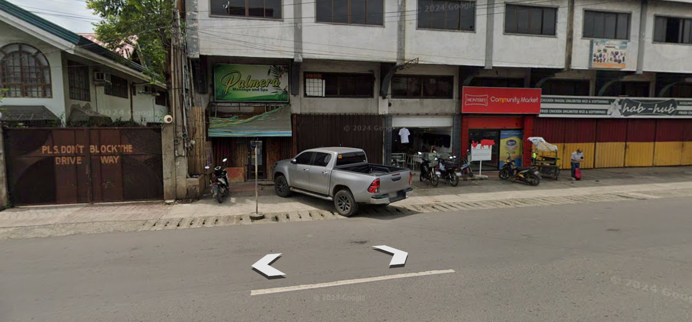
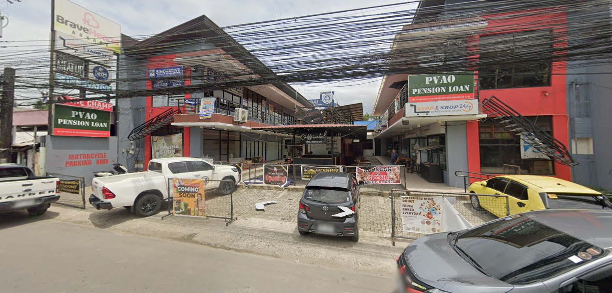
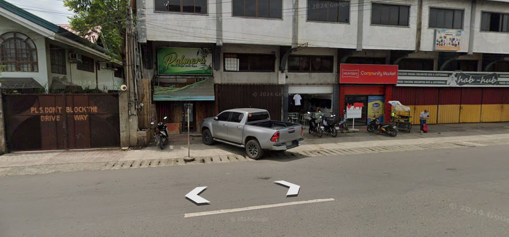
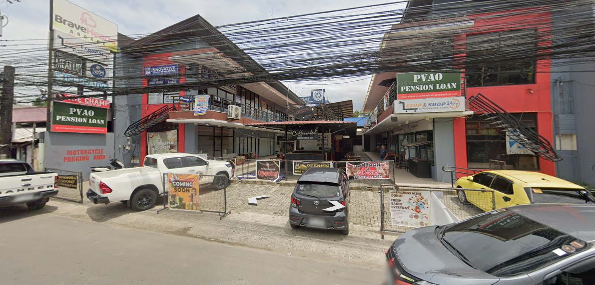

Happy Valentine's Day
Today is Day since August 30, 2025
— the day we first met

Click to Open
My loving cherry...
Happy Valentine's Day, my love. No matter where you are right now or who you're with, I hope you feel light, because even from afar, you are in my thoughts and in every part of me that cares for you.
I know this may not be the grandest gift, and I'm sorry that this is all I can offer for now, but please know that this little website wasn't made out of obligation; it was made out of love. Every word, every detail, every memory placed here carries a piece of me, meant entirely for you. I hope it made you smile, even just a little. I hope you don't find it too cliché, but even if it is, it's sincere. I couldn't let this day pass without showing you, without reminding you that you matter to me more than words can express.
I may not be by your side, nor your date this Heart's Day, but please know this. I will never get tired of you. I will never get tired of showing you how much I care, how much I think about you, and how much you mean to me. Every little thing I do, every word I write, every thought I hold is a reflection of the love I feel for you. Even from afar, even in silence, I find ways to reach you, to remind you that you are cherished, admired, and endlessly special. Time, distance, words, and even the presence of others cannot make it fade. No matter where life takes us, no matter the moments we are apart, I will always love you.
You will always be my Cherry, not just for now, not just for a season, but for as long as I live and beyond infinity. I love you so much, more than I can ever put into words, and I hope that even in this small gesture, you feel the depth of my devotion for you. Belated Happy Valentine's Day, Baby. ILOVEYOU SO MUCH<3
From my orbit to yours,
Buen
Top 3 Songs
Forgot the time

The first song we discovered together, back at the office, where it was just you and me. That moment feels frozen in time. Every note still carries the warmth of your presence. We were quiet, but the beat of my heart in that moment was pounding.
Wantchu

Aside from Keshi being my all-time favorite artist, I really love this song. It's more than just the melody or the lyrics - it's the little moments we shared that make it unforgettable. This song carries those subtle "papansin" moments between us, the quiet sparks that made us notice each other, smile secretly, and feel that special connection. Every time I hear it, I'm reminded of how our hearts found each other in those small, fleeting moments, and how even the simplest things became beautiful when we experienced them together.
Sentimental
Our forever song. Every lyric, every note, every beat resonates with us. This song will always remind me of your smile, the way your eyes light up when you're happy, and the quiet moments that feel like they belong only to us. Every time I hear it, I'm transported back to those memories, and I'm reminded just how beautiful you are, inside and out, and how lucky I am to have you in my life.
Our Journey Together
  
 


These are the places where our story quietly unfolded, where we met in secret and let our hearts speak in silence. It all began at our school, Liceo de Cagayan University, the place where fate first brought us together. The most unforgettable moments were at my lola’s house in Lanao, where love felt gentle, warm, and real.
Our Cherished Memories